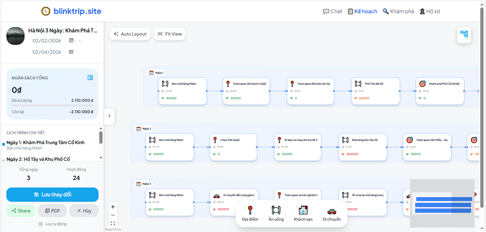
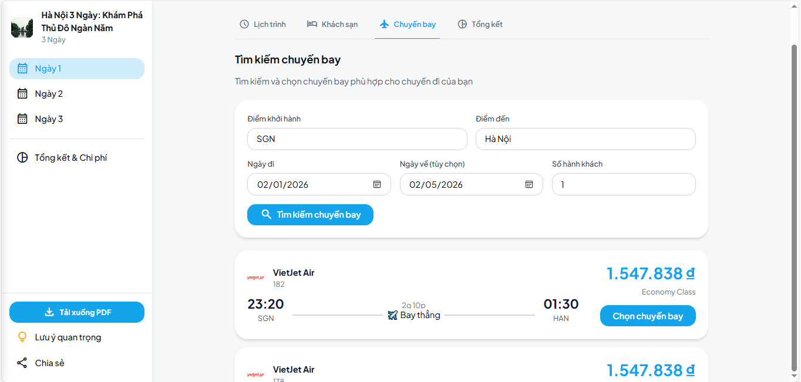

🧭 blinktrip.site - Trợ lý du lịch thông minh
📋 Mục lục
- Thông tin chung về dự án
- Tóm tắt dự án (Executive Summary)
- Bối cảnh & Vấn đề
- Giải pháp
- Đối tượng khách hàng
- Lý do cần sản phẩm (Why Now?)
- Tính khả thi
- Mô tả sản phẩm chi tiết
- Mô hình kinh doanh
- Phân tích cạnh tranh
- Lộ trình phát triển
- Kế hoạch marketing
- Rủi ro & Giải pháp
- Tác động xã hội / Giá trị nhân văn
- Kết luận & Kêu gọi hỗ trợ
1. Thông tin chung về dự án
Tên dự án / Tên ý tưởng
blinktrip.site - Trợ lý du lịch thông minh được hỗ trợ bởi AI
Đơn vị / Nhóm thực hiện
Jet2holidays
Thành viên và vai trò
- Nguyễn Văn Mạnh - Backend Developer / AI Engineer
- Nguyễn Thành Phi - Frontend Developer / Full-stack Developer
- Võ Hoàng Tuấn - Full-stack Developer / Project Manager
Thời gian thực hiện
Từ 01/12/2025 đến nay
Lĩnh vực
AI trong du lịch & Chuyển đổi số - Ứng dụng công nghệ trí tuệ nhân tạo vào lĩnh vực du lịch, tự động hóa quy trình lên kế hoạch du lịch cho người dùng Việt Nam.
2. Tóm tắt dự án (Executive Summary)
blinktrip.site là một AI Agent thông minh tự động lên kế hoạch du lịch cho người dùng Việt Nam. Sản phẩm giải quyết vấn đề mất nhiều thời gian research và thông tin rời rạc khi lên kế hoạch du lịch bằng cách sử dụng công nghệ LLM (Large Language Model) kết hợp với tìm kiếm web real-time và cơ sở dữ liệu. Sản phẩm mang lại giá trị vượt trội với khả năng tạo lịch trình chi tiết trong vòng chưa đầy 30 giây, cá nhân hóa theo sở thích và ngân sách của từng người dùng. Đối tượng sử dụng chính là du khách cá nhân, gia đình và nhóm bạn muốn có trải nghiệm du lịch được tối ưu hóa một cách nhanh chóng và tiện lợi.
Giá trị cốt lõi:
- ⚡ Nhanh chóng: Tạo lịch trình trong < 30 giây
- 🧠 Thông minh: Cá nhân hóa theo sở thích, ngân sách, phong cách du lịch
- 🔍 Cập nhật: Thông tin real-time từ web search
- 💰 Tiết kiệm: Ước tính chi phí chính xác trước khi đi
- 🇻🇳 Việt Nam: Tối ưu cho thị trường và văn hóa Việt Nam
3. Bối cảnh & Vấn đề
3.1. Hiện trạng
Người dùng đang gặp khó khăn gì?
Vấn đề 1: Mất nhiều thời gian research
- Người dùng phải dành 4-8 giờ để tìm hiểu về địa điểm du lịch
- Phải mở nhiều tab trình duyệt, đọc nhiều bài viết, xem nhiều video
- Thông tin tràn ngập, khó phân biệt quảng cáo và review thật
Vấn đề 2: Thông tin rời rạc từ nhiều nguồn
- Phải tổng hợp thông tin từ Google, TripAdvisor, blog cá nhân, YouTube
- Mỗi nguồn có format khác nhau, khó so sánh
- Không có công cụ tập trung để quản lý tất cả thông tin
Vấn đề 3: Khó tạo lịch trình tối ưu
- Không biết cách sắp xếp thời gian hợp lý giữa các địa điểm
- Không tính được thời gian di chuyển, thời gian tham quan
- Khó cân bằng giữa các hoạt động theo sở thích cá nhân
Vấn đề 4: Không biết ngân sách trước khi đi
- Khó ước tính chi phí chính xác cho chuyến đi
- Không biết giá vé, giá phòng, giá ăn uống hiện tại
- Dễ bị "sốc" khi chi phí thực tế vượt quá dự kiến
Vấn đề 5: Phải sử dụng nhiều app/website khác nhau
- Mở Google Maps để xem vị trí
- Mở Booking/Agoda để tìm khách sạn
- Mở TripAdvisor để xem review
- Mở các app khác để tìm nhà hàng, vé tham quan
- Không có công cụ "all-in-one"
Thị trường hiện nay có giải pháp nào chưa?
Các giải pháp hiện có:
- TripAdvisor, Google Travel
- ✅ Cung cấp thông tin địa điểm, review
- ❌ Không tự động tạo lịch trình chi tiết
- ❌ Không cá nhân hóa theo sở thích
-
❌ Không tích hợp ngân sách
-
Travel Agents (Công ty du lịch)
- ✅ Tư vấn chuyên nghiệp
- ❌ Chi phí cao
- ❌ Không linh hoạt, phải theo tour có sẵn
-
❌ Không phù hợp với du lịch tự túc
-
Blog du lịch, YouTube
- ✅ Thông tin chi tiết, trải nghiệm thực tế
- ❌ Thông tin có thể đã cũ
- ❌ Không cá nhân hóa
-
❌ Phải tự tổng hợp thông tin
-
App du lịch nước ngoài (Expedia, Kayak)
- ✅ Công nghệ tiên tiến
- ❌ Tối ưu cho thị trường nước ngoài
- ❌ Hỗ trợ tiếng Việt hạn chế
- ❌ Dữ liệu về Việt Nam không đầy đủ
Các hạn chế, bất cập của các giải pháp hiện tại
- Không tự động hóa: Người dùng vẫn phải tự làm mọi thứ
- Không cá nhân hóa: Không tính đến sở thích, ngân sách, phong cách du lịch riêng
- Thông tin không cập nhật: Dữ liệu có thể đã cũ, không phản ánh giá cả hiện tại
- Không tích hợp: Phải dùng nhiều công cụ riêng lẻ
- Không hỗ trợ tiếng Việt tốt: Các công cụ quốc tế không tối ưu cho người Việt
- Chi phí cao: Dịch vụ tư vấn chuyên nghiệp thường đắt đỏ
3.2. Mức độ nghiêm trọng
Dữ liệu thống kê
Thị trường du lịch Việt Nam:
- Theo Tổng cục Du lịch Việt Nam, năm 2023 có hơn 100 triệu lượt khách du lịch nội địa
- Người Việt dành trung bình 6-8 giờ để lên kế hoạch cho một chuyến du lịch 3-5 ngày
- 75% người dùng phàn nàn về việc mất quá nhiều thời gian research
- 60% người dùng không ước tính đúng ngân sách, dẫn đến chi tiêu vượt mức
Xu hướng công nghệ:
- 85% người dùng smartphone sử dụng app du lịch khi đi du lịch
- 70% người dùng muốn có công cụ tự động hóa việc lên kế hoạch
- Thị trường AI trong du lịch dự kiến tăng trưởng 25% mỗi năm từ 2024-2030
Hậu quả nếu vấn đề không được giải quyết
- Mất thời gian: Người dùng tiếp tục lãng phí hàng giờ để research
- Trải nghiệm kém: Lịch trình không tối ưu, bỏ lỡ nhiều địa điểm thú vị
- Chi phí cao: Không ước tính đúng ngân sách, chi tiêu vượt mức
- Căng thẳng: Áp lực khi phải tự làm mọi thứ, lo lắng về chuyến đi
- Bỏ lỡ cơ hội: Nhiều người từ bỏ ý định du lịch vì quá phức tạp
3.3. Nhu cầu thị trường
Ai cần?
Nhóm 1: Du khách cá nhân (Solo Traveler)
- Độ tuổi: 22-35
- Đặc điểm: Độc lập, thích khám phá, budget conscious
- Nhu cầu: Lịch trình linh hoạt, tiết kiệm, an toàn
Nhóm 2: Gia đình có trẻ nhỏ
- Độ tuổi: 30-45
- Đặc điểm: Cần lịch trình phù hợp với trẻ em, an toàn, tiện nghi
- Nhu cầu: Địa điểm family-friendly, thời gian nghỉ ngơi hợp lý
Nhóm 3: Nhóm bạn (Group Travel)
- Độ tuổi: 20-40
- Đặc điểm: Nhiều sở thích khác nhau, cần điều phối
- Nhu cầu: Lịch trình cân bằng, phù hợp nhiều người
Nhóm 4: Du lịch công tác (Business Travel)
- Độ tuổi: 25-50
- Đặc điểm: Thời gian hạn chế, cần tối ưu
- Nhu cầu: Lịch trình hiệu quả, gần trung tâm, tiện nghi
Nhóm 5: Backpacker / Du lịch bụi
- Độ tuổi: 18-30
- Đặc điểm: Budget thấp, thích trải nghiệm địa phương
- Nhu cầu: Giá rẻ, địa điểm độc đáo, linh hoạt
Cần trong bối cảnh nào?
- Trước khi đi du lịch: Lên kế hoạch chi tiết
- Trong khi đi du lịch: Tham khảo lịch trình, tìm địa điểm gần đó
- Sau khi đi du lịch: Lưu trữ kỷ niệm, chia sẻ với bạn bè
- Lập kế hoạch dài hạn: Lưu các ý tưởng cho tương lai
Tần suất và tính cấp thiết ra sao?
- Tần suất: Trung bình 2-4 chuyến du lịch/năm/người
- Tính cấp thiết: Cao - người dùng cần giải pháp ngay khi có ý định du lịch
- Thời điểm: Đặc biệt cao vào mùa du lịch (Tết, hè, các kỳ nghỉ lễ)
4. Giải pháp
4.1. Mô tả giải pháp
Sản phẩm/dịch vụ là gì?
blinktrip.site là một nền tảng web được hỗ trợ bởi AI, cho phép người dùng tạo lịch trình du lịch chi tiết chỉ bằng cách trò chuyện tự nhiên bằng tiếng Việt. Hệ thống sử dụng công nghệ LLM (Gemini Pro) kết hợp với tìm kiếm web real-time (DuckDuckGo) và cơ sở dữ liệu để tạo ra kế hoạch du lịch được cá nhân hóa, bao gồm:
- 📅 Lịch trình chi tiết theo ngày/giờ
- 💰 Ước tính ngân sách chính xác
- 🗺️ Gợi ý địa điểm phù hợp với sở thích
- 🏨 Thông tin khách sạn, nhà hàng
- ✈️ Tìm kiếm và so sánh vé máy bay
- 📝 Lưu trữ và quản lý nhiều kế hoạch
Chức năng chính
| Chức năng |
Mô tả |
Công nghệ |
| 💬 Natural Chat |
Trò chuyện tự nhiên tiếng Việt với AI |
Gemini Pro |
| 🔍 Real-time Search |
Tìm kiếm thông tin du lịch mới nhất từ web |
DuckDuckGo API |
| 📅 Smart Planning |
Sinh lịch trình chi tiết theo ngày/giờ |
LangChain Agent |
| 💰 Budget Calculator |
Ước tính chi phí ăn-ở-chơi-di chuyển |
Custom Algorithm |
| 💾 Plan Management |
Lưu, xem, chỉnh sửa, chia sẻ kế hoạch |
SQLite Database |
| 🗺️ Discovery Feature |
Khám phá địa điểm theo phong cách Tinder |
Pexels API + Hammer.js |
| ✈️ Flight Search |
Tìm kiếm và so sánh vé máy bay |
Agoda Flight API |
| 🏨 Hotel Search |
Tìm kiếm khách sạn phù hợp |
Hotel Search API |
| 📊 Recommendation |
Gợi ý dựa trên lịch sử và sở thích |
ML-based |
| 📤 Export PDF |
Xuất kế hoạch ra file PDF |
WeasyPrint |
| 🔄 Real-time Sync |
Đồng bộ thời gian thực với Socket.IO |
Flask-SocketIO |
Công nghệ sử dụng
Backend:
- Python 3.10+: Ngôn ngữ lập trình chính
- Flask 3.0: Web framework nhẹ, linh hoạt
- LangChain: Framework để xây dựng AI Agent
- Google Gemini Pro: LLM mạnh mẽ, hỗ trợ tiếng Việt tốt
- DuckDuckGo Search: Tìm kiếm web miễn phí, không cần API key
- SQLite3: Database nhẹ, dễ triển khai
- Flask-SocketIO: Real-time communication
Frontend:
- HTML5 + Jinja2: Template engine
- TailwindCSS 3: Utility-first CSS framework
- Vanilla JavaScript: Không phụ thuộc framework nặng
- Hammer.js: Touch gestures cho mobile
AI & Integration:
- LangChain Agents: Tự động quyết định khi nào cần search, khi nào cần query database
- Web Search Tool: Tìm kiếm thông tin real-time
- Database Query Tool: Lấy dữ liệu từ lịch sử người dùng
4.2. Điểm nổi bật & Tính mới
Điều gì khác biệt so với sản phẩm hiện có?
1. AI-Powered Planning (Hoàn toàn tự động)
- ✅ Tự động tạo lịch trình chi tiết chỉ từ câu nói tự nhiên
- ❌ Đối thủ: Chỉ cung cấp thông tin, người dùng phải tự sắp xếp
2. Real-time Information (Thông tin cập nhật)
- ✅ Tìm kiếm thông tin mới nhất từ web real-time
- ❌ Đối thủ: Dữ liệu có thể đã cũ, không cập nhật
3. Vietnamese-First (Tối ưu cho người Việt)
- ✅ Hiểu ngữ cảnh văn hóa Việt Nam, địa điểm Việt Nam
- ✅ Giao tiếp hoàn toàn bằng tiếng Việt tự nhiên
- ❌ Đối thủ: Tối ưu cho thị trường quốc tế, hỗ trợ tiếng Việt hạn chế
4. All-in-One Platform (Tất cả trong một)
- ✅ Chat, lịch trình, ngân sách, tìm vé, tìm khách sạn trong một nơi
- ❌ Đối thủ: Phải dùng nhiều app/website khác nhau
5. Personalization (Cá nhân hóa sâu)
- ✅ Học từ lịch sử, sở thích, ngân sách của từng người dùng
- ✅ Gợi ý phù hợp với phong cách du lịch cá nhân
- ❌ Đối thủ: Gợi ý chung chung, không cá nhân hóa
6. Free & Open (Miễn phí và minh bạch)
- ✅ Sử dụng công nghệ open-source, API miễn phí
- ✅ Không có chi phí ẩn, không bắt buộc đăng ký
- ❌ Đối thủ: Nhiều tính năng premium phải trả phí
Lợi thế cạnh tranh
1. Công nghệ AI tiên tiến
- Sử dụng LLM mới nhất (Gemini Pro) với khả năng hiểu ngữ cảnh tốt
- LangChain Agent tự động quyết định workflow phức tạp
- Kết hợp nhiều nguồn dữ liệu (web search + database + user history)
2. Hiểu biết sâu về thị trường Việt Nam
- Dữ liệu về địa điểm, văn hóa, thói quen du lịch của người Việt
- Hiểu ngữ cảnh địa phương, giá cả thực tế tại Việt Nam
- Tối ưu cho các điểm đến phổ biến trong nước
3. Tốc độ phát triển nhanh
- Codebase sạch, dễ mở rộng
- Có thể thêm tính năng mới nhanh chóng
- Phản hồi feedback từ người dùng nhanh
4. Chi phí vận hành thấp
- Sử dụng API miễn phí (Gemini free tier, DuckDuckGo)
- Infrastructure đơn giản (có thể chạy trên VPS nhỏ)
- Dễ scale khi cần
5. Community-driven
- Open-source, cộng đồng có thể đóng góp
- Phản hồi từ người dùng được tích hợp nhanh
- Xây dựng ecosystem xung quanh sản phẩm
4.3. Giá trị mang lại
Giá trị chức năng
- Tiết kiệm thời gian: Giảm từ 6-8 giờ xuống còn < 30 giây để có lịch trình
- Thông tin chính xác: Real-time data từ web, không bị lỗi thời
- Lịch trình tối ưu: Tự động sắp xếp thời gian, địa điểm hợp lý
- Ước tính ngân sách: Biết trước chi phí, tránh sốc khi đi
- Quản lý tập trung: Tất cả kế hoạch ở một nơi, dễ tìm lại
Giá trị cảm xúc
- Giảm căng thẳng: Không còn lo lắng về việc lên kế hoạch
- Tự tin hơn: Có kế hoạch chi tiết, yên tâm khi đi du lịch
- Hứng thú: Khám phá địa điểm mới qua Discovery feature
- Thoải mái: Giao tiếp tự nhiên như chat với bạn bè
- Hài lòng: Trải nghiệm du lịch tốt hơn nhờ lịch trình tối ưu
Giá trị xã hội
- Khuyến khích du lịch nội địa: Giúp người Việt khám phá đất nước mình
- Hỗ trợ ngành du lịch: Tăng số lượng khách du lịch, hỗ trợ doanh nghiệp địa phương
- Phát triển bền vững: Gợi ý địa điểm ít khách, phân tán du lịch
- Giáo dục: Cung cấp thông tin về văn hóa, lịch sử địa phương
- Kết nối: Chia sẻ kế hoạch với bạn bè, tạo cộng đồng du lịch
5. Đối tượng khách hàng
5.1. Khách hàng mục tiêu (Customer Segment)
Nhóm 1: Solo Traveler (Du khách cá nhân)
Nhóm độ tuổi: 22-35 tuổi
Nghề nghiệp:
- Nhân viên văn phòng
- Freelancer
- Sinh viên đại học/ sau đại học
- Người làm việc tự do
Nhu cầu:
- Lịch trình linh hoạt, có thể thay đổi
- Tiết kiệm chi phí (budget conscious)
- Địa điểm an toàn cho người đi một mình
- Trải nghiệm độc đáo, không theo tour
- Có thể gặp gỡ người mới (optional)
Khả năng chi trả:
- Ngân sách: 2-5 triệu VNĐ cho chuyến 3-5 ngày
- Sẵn sàng trả phí cho app premium nếu giá trị rõ ràng
- Ưu tiên giá trị hơn giá cả
Đặc điểm hành vi:
- Sử dụng smartphone thường xuyên
- Quen với công nghệ, app mobile
- Thích chia sẻ trên mạng xã hội
- Tìm kiếm thông tin online trước khi đi
Nhóm 2: Family Trip (Du lịch gia đình)
Nhóm độ tuổi: 30-45 tuổi (cha mẹ), 5-15 tuổi (con cái)
Nghề nghiệp:
- Nhân viên công chức
- Doanh nhân
- Giáo viên
- Nhân viên ngân hàng
Nhu cầu:
- Địa điểm phù hợp với trẻ em
- An toàn, vệ sinh tốt
- Có chỗ nghỉ ngơi, không quá mệt
- Hoạt động giáo dục, vui chơi cho trẻ
- Tiện nghi, không quá "bụi"
Khả năng chi trả:
- Ngân sách: 5-15 triệu VNĐ cho chuyến 3-5 ngày (gia đình 4 người)
- Sẵn sàng chi trả cho dịch vụ tốt
- Ưu tiên chất lượng, an toàn
Đặc điểm hành vi:
- Lên kế hoạch trước 1-2 tháng
- Tham khảo nhiều nguồn trước khi quyết định
- Quan tâm đến review, đánh giá
- Cần hỗ trợ nhiều hơn trong quá trình lên kế hoạch
Nhóm 3: Group Travel (Du lịch nhóm bạn)
Nhóm độ tuổi: 20-40 tuổi
Nghề nghiệp:
- Sinh viên
- Nhân viên văn phòng trẻ
- Nhóm bạn học cũ
- Đồng nghiệp
Nhu cầu:
- Lịch trình cân bằng nhiều sở thích khác nhau
- Địa điểm phù hợp cho nhóm đông
- Có thể chia sẻ, chỉnh sửa kế hoạch cùng nhau
- Ngân sách phù hợp với nhiều người
- Hoạt động team-building
Khả năng chi trả:
- Ngân sách: 3-8 triệu VNĐ/người cho chuyến 2-4 ngày
- Có thể chia sẻ chi phí app premium
- Quan tâm đến giá trị nhóm
Đặc điểm hành vi:
- Quyết định theo nhóm, cần thảo luận
- Sử dụng mạng xã hội để chia sẻ
- Cần công cụ collaboration
- Thích tính năng real-time sync
Nhóm 4: Business Travel (Du lịch công tác)
Nhóm độ tuổi: 25-50 tuổi
Nghề nghiệp:
- Quản lý, giám đốc
- Nhân viên kinh doanh
- Người làm việc remote
- Freelancer đi công tác
Nhu cầu:
- Tối ưu thời gian, hiệu quả
- Gần trung tâm, tiện di chuyển
- Kết hợp công việc và tham quan
- Tiện nghi, professional
- Có thể làm việc tại địa điểm
Khả năng chi trả:
- Ngân sách: 5-20 triệu VNĐ cho chuyến 2-5 ngày
- Công ty có thể chi trả
- Sẵn sàng trả phí cho dịch vụ premium
Đặc điểm hành vi:
- Lên kế hoạch nhanh, quyết định nhanh
- Cần thông tin chính xác, đáng tin cậy
- Sử dụng nhiều thiết bị (laptop, smartphone)
- Quan tâm đến productivity tools
Nhóm 5: Backpacker (Du lịch bụi)
Nhóm độ tuổi: 18-30 tuổi
Nghề nghiệp:
- Sinh viên
- Người đi làm thêm
- Freelancer
- Gap year travelers
Nhu cầu:
- Budget thấp, giá rẻ
- Địa điểm độc đáo, ít khách
- Trải nghiệm địa phương, văn hóa
- Linh hoạt, có thể thay đổi
- Có thể ở homestay, hostel
Khả năng chi trả:
- Ngân sách: 1-3 triệu VNĐ cho chuyến 3-7 ngày
- Rất nhạy cảm với giá cả
- Ưu tiên miễn phí, giá rẻ
Đặc điểm hành vi:
- Sử dụng smartphone là chính
- Thích chia sẻ trên social media
- Quan tâm đến tính bền vững
- Tìm kiếm deal, giảm giá
5.2. Đối tượng thụ hưởng
Đối tượng thụ hưởng trực tiếp:
- Người dùng sử dụng sản phẩm để lên kế hoạch du lịch
- Gia đình, nhóm bạn được hưởng lợi từ kế hoạch được tối ưu
Đối tượng thụ hưởng gián tiếp:
- Doanh nghiệp du lịch địa phương: Tăng số lượng khách, doanh thu
- Cộng đồng địa phương: Phát triển kinh tế, tạo việc làm
- Ngành du lịch Việt Nam: Tăng trưởng bền vững, nâng cao chất lượng dịch vụ
- Xã hội: Khuyến khích du lịch nội địa, bảo tồn văn hóa, phát triển bền vững
6. Lý do cần sản phẩm (Why Now?)
Tại sao cần giải pháp này ngay bây giờ?
1. Xu hướng công nghệ AI đang bùng nổ
LLM (Large Language Model) đã sẵn sàng:
- Google Gemini, OpenAI GPT đã đạt độ chín về khả năng hiểu ngữ cảnh
- Hỗ trợ tiếng Việt tốt hơn bao giờ hết
- Chi phí API giảm đáng kể, có free tier
- Công nghệ LangChain giúp xây dựng AI Agent dễ dàng hơn
Thời điểm vàng cho AI Applications:
- Người dùng đã quen với ChatGPT, Bard
- Kỳ vọng về AI đã được nâng cao
- Sẵn sàng sử dụng AI trong cuộc sống hàng ngày
2. Hành vi người dùng sau COVID-19
Du lịch nội địa tăng mạnh:
- Người Việt ưu tiên du lịch trong nước hơn
- Nhu cầu lên kế hoạch du lịch tăng cao
- Muốn khám phá đất nước mình nhiều hơn
Thay đổi thói quen:
- Quen với việc làm mọi thứ online
- Sử dụng smartphone nhiều hơn
- Mong đợi trải nghiệm số hóa tốt hơn
Budget conscious:
- Sau COVID, người dùng cẩn thận hơn với chi tiêu
- Cần công cụ để ước tính ngân sách chính xác
- Tìm kiếm giá trị tốt nhất
3. Thị trường du lịch Việt Nam đang phục hồi
Tăng trưởng mạnh:
- Du lịch nội địa đã phục hồi và vượt mức trước COVID
- Nhiều điểm đến mới được phát triển
- Cơ sở hạ tầng du lịch được cải thiện
Cơ hội:
- Thị trường lớn, chưa có giải pháp AI mạnh mẽ
- Người dùng sẵn sàng thử công nghệ mới
- Cạnh tranh chưa quá khốc liệt
4. Công nghệ hỗ trợ đã sẵn sàng
Infrastructure:
- Internet phổ biến, tốc độ cao
- Smartphone penetration cao (>90%)
- Payment gateway phát triển
APIs & Tools:
- Google Gemini API miễn phí
- DuckDuckGo Search miễn phí
- Nhiều travel APIs có sẵn (Agoda, Booking.com)
- Open-source tools mạnh mẽ (LangChain, Flask)
5. Thời điểm vàng để ra mắt sản phẩm
Mùa du lịch sắp tới:
- Tết Nguyên Đán (tháng 1-2)
- Mùa hè (tháng 6-8)
- Các kỳ nghỉ lễ trong năm
Chưa có đối thủ mạnh:
- Các app du lịch hiện tại chưa tích hợp AI mạnh mẽ
- Cơ hội chiếm lĩnh thị trường
Hỗ trợ từ cộng đồng:
- Cộng đồng developer Việt Nam mạnh
- Nhiều hackathon, startup support
- Dễ tìm mentor, advisor
7. Tính khả thi
7.1. Khả thi về công nghệ
Công nghệ đã sẵn sàng chưa?
✅ Hoàn toàn sẵn sàng:
- LLM (Large Language Model)
- Google Gemini Pro: Miễn phí, mạnh mẽ, hỗ trợ tiếng Việt tốt
- OpenAI GPT: Có thể sử dụng nếu cần (có phí)
-
Công nghệ đã chín muồi, stable
-
AI Framework
- LangChain: Framework mạnh mẽ, cộng đồng lớn
- Dễ tích hợp với nhiều LLM
-
Có sẵn nhiều tools, examples
-
Web Search
- DuckDuckGo: Miễn phí, không cần API key
- Có thể tích hợp Google Search nếu cần
-
Công nghệ web scraping đã phát triển
-
Backend Framework
- Flask: Nhẹ, linh hoạt, dễ học
- Python: Ngôn ngữ phổ biến, nhiều thư viện
-
SQLite: Đơn giản, đủ cho MVP
-
Frontend
- HTML/CSS/JS: Công nghệ web chuẩn
- TailwindCSS: Utility-first, phát triển nhanh
- Responsive design: Dễ làm
Đội ngũ có năng lực không?
✅ Có năng lực:
Kỹ năng cần thiết:
- Python programming: ✅ Có
- Web development (Flask): ✅ Có
- AI/ML basics: ✅ Có (sử dụng LLM API)
- Frontend (HTML/CSS/JS): ✅ Có
- Database (SQLite): ✅ Có
Kỹ năng có thể học nhanh:
- LangChain: Framework mới nhưng dễ học
- API integration: Standard practice
- Deployment: Có nhiều hướng dẫn
Hỗ trợ từ cộng đồng:
- LangChain documentation tốt
- Nhiều tutorials, examples
- Cộng đồng developer Việt Nam hỗ trợ
7.2. Khả thi về thị trường
Nhu cầu thực tế
✅ Nhu cầu cao và rõ ràng:
- Pain points rõ ràng:
- Người dùng phàn nàn về việc mất thời gian research
- Khó khăn trong việc lên kế hoạch
-
Thiếu công cụ hỗ trợ
-
Sẵn sàng sử dụng:
- Đã quen với AI (ChatGPT, Bard)
- Sử dụng app du lịch thường xuyên
-
Mong đợi giải pháp tốt hơn
-
Willingness to pay:
- Sẵn sàng trả phí cho giá trị rõ ràng
- Đã chi tiêu cho du lịch (vé, khách sạn)
- Có thể chi trả cho app premium
Quy mô thị trường
Thị trường lớn:
- 100+ triệu lượt khách du lịch nội địa/năm (theo Tổng cục Du lịch)
- 85% người dùng smartphone sử dụng app du lịch
- 70% người dùng muốn có công cụ tự động hóa
TAM (Total Addressable Market):
- Toàn bộ người dùng du lịch Việt Nam: ~50-70 triệu người
SAM (Serviceable Addressable Market):
- Người dùng smartphone, có internet: ~40-50 triệu người
SOM (Serviceable Obtainable Market):
- Người dùng sẵn sàng thử công nghệ mới: ~5-10 triệu người (năm đầu)
Khả năng mở rộng
✅ Dễ mở rộng:
- Technology scalability:
- Có thể scale từ SQLite lên PostgreSQL
- Có thể thêm caching (Redis)
-
Có thể deploy trên cloud (AWS, GCP, Azure)
-
Feature scalability:
- Dễ thêm tính năng mới (flight, hotel, restaurant)
- Có thể tích hợp với nhiều APIs
-
Có thể mở rộng sang mobile app
-
Market scalability:
- Có thể mở rộng sang thị trường quốc tế
- Có thể thêm ngôn ngữ khác
- Có thể phục vụ nhiều segment khác nhau
7.3. Khả thi về tài chính
Chi phí thấp không?
✅ Chi phí rất thấp cho MVP:
Chi phí phát triển:
- Development: $0 (tự làm)
- Tools & Software: $0 (open-source, free tier)
- Design: $0 (tự làm hoặc free templates)
Chi phí vận hành (tháng đầu):
- Hosting: $5-10/tháng (VPS nhỏ)
- Domain: $10/năm (~$1/tháng)
- Gemini API: $0 (free tier đủ cho MVP)
- DuckDuckGo: $0 (miễn phí)
- Tổng: ~$6-11/tháng
Chi phí khi scale:
- Hosting: $20-50/tháng (VPS lớn hơn)
- Gemini API: $0-50/tháng (tùy usage)
- Database: $0-20/tháng (nếu dùng cloud DB)
- CDN: $0-10/tháng
- Tổng: ~$20-130/tháng (cho 10,000-50,000 users)
Dễ vận hành không?
✅ Rất dễ vận hành:
- Infrastructure đơn giản:
- Chỉ cần 1 VPS nhỏ
- Không cần nhiều servers
-
Dễ monitor, maintain
-
Codebase sạch:
- Cấu trúc rõ ràng
- Dễ debug, fix bugs
-
Dễ thêm tính năng mới
-
Tự động hóa:
- Có thể setup CI/CD
- Auto backup database
-
Auto scaling nếu cần
-
Low maintenance:
- Ít dependencies phức tạp
- Không cần update thường xuyên
- Dễ troubleshoot
Kết luận: Dự án hoàn toàn khả thi về cả 3 mặt: công nghệ, thị trường và tài chính. Chi phí thấp, công nghệ sẵn sàng, thị trường lớn và có nhu cầu rõ ràng.
8. Mô tả sản phẩm chi tiết
8.1. Chức năng chính
1. 💬 Natural Language Chat (Trò chuyện tự nhiên)
Mô tả:
Người dùng có thể trò chuyện với AI bằng tiếng Việt tự nhiên như đang nói chuyện với bạn bè. AI hiểu ngữ cảnh, sở thích, ngân sách và tự động tạo lịch trình phù hợp.
Lợi ích:
- Không cần học cách sử dụng phức tạp
- Giao tiếp tự nhiên, thân thiện
- AI hiểu ý định ngay cả khi câu nói không hoàn chỉnh
Ví dụ:
User: "Tôi muốn đi Đà Lạt 3 ngày 2 đêm cuối tuần này, ngân sách 5 triệu, thích chụp ảnh và khám phá thiên nhiên"
AI: "Tuyệt vời! Tôi sẽ tạo kế hoạch cho bạn ngay..."
2. 🔍 Real-time Web Search (Tìm kiếm thông tin mới nhất)
Mô tả:
Hệ thống tự động tìm kiếm thông tin mới nhất về địa điểm, thời tiết, giá cả từ web để đảm bảo thông tin luôn cập nhật.
Lợi ích:
- Thông tin luôn mới, không bị lỗi thời
- Tự động cập nhật giá cả, thời tiết
- Không cần người dùng tự tìm kiếm
Công nghệ:
- DuckDuckGo Search API
- Tự động cache kết quả để tối ưu performance
3. 📅 Smart Itinerary Generation (Tạo lịch trình thông minh)
Mô tả: Tự động tạo lịch trình chi tiết theo ngày/giờ, bao gồm:
- Sáng: Hoạt động gì, ở đâu, thời gian
- Trưa: Ăn ở đâu, nghỉ ngơi
- Chiều: Tham quan địa điểm nào
- Tối: Ăn tối, giải trí
Lợi ích:
- Lịch trình tối ưu về thời gian và địa điểm
- Tự động tính thời gian di chuyển
- Cân bằng giữa các hoạt động
Format output:
{
"day": 1,
"date": "2025-10-25",
"morning": {
"time": "08:00-12:00",
"activity": "Check-in khách sạn + Hồ Xuân Hương",
"location": "Trung tâm Đà Lạt",
"cost": 100000
},
"afternoon": {...},
"evening": {...}
}
4. 💰 Budget Calculator (Tính toán ngân sách)
Mô tả: Tự động ước tính chi phí cho toàn bộ chuyến đi, bao gồm:
- Di chuyển (vé máy bay, xe khách, taxi)
- Lưu trú (khách sạn, homestay)
- Ăn uống (nhà hàng, quán ăn)
- Hoạt động (vé tham quan, giải trí)
- Chi phí khác (mua sắm, tips)
Lợi ích:
- Biết trước tổng chi phí
- Phân bổ ngân sách hợp lý
- Tránh chi tiêu vượt mức
Budget breakdown:
{
"transport": 500000,
"accommodation": 2000000,
"food": 1500000,
"activities": 800000,
"other": 200000,
"total": 5000000
}
5. 💾 Plan Management (Quản lý kế hoạch)
Mô tả: Lưu trữ, quản lý nhiều kế hoạch du lịch:
- Lưu kế hoạch đã tạo
- Xem danh sách tất cả kế hoạch
- Chỉnh sửa, cập nhật kế hoạch
- Đánh dấu yêu thích
- Xóa kế hoạch không cần
Lợi ích:
- Tất cả kế hoạch ở một nơi
- Dễ tìm lại kế hoạch cũ
- Có thể sửa đổi khi cần
6. 🗺️ Discovery Feature (Khám phá địa điểm)
Mô tả: Tính năng khám phá địa điểm theo phong cách Tinder:
- Swipe trái: Bỏ qua
- Swipe phải: Thêm vào yêu thích
- Nhấn nút: Lên kế hoạch ngay
Lợi ích:
- Khám phá địa điểm mới một cách thú vị
- Tìm cảm hứng cho chuyến đi tiếp theo
- Trải nghiệm tương tác, vui vẻ
Công nghệ:
- Pexels API: Hình ảnh đẹp cho mỗi địa điểm
- Hammer.js: Touch gestures cho mobile
- 20 địa điểm nổi tiếng Việt Nam
7. ✈️ Flight Search (Tìm kiếm vé máy bay)
Mô tả: Tích hợp tìm kiếm và so sánh vé máy bay:
- Tìm kiếm chuyến bay một chiều, khứ hồi
- So sánh giá từ nhiều hãng
- Lưu vé đã chọn vào kế hoạch
- Thông tin chi tiết: thời gian, hãng, giá
Lợi ích:
- Tìm vé tốt nhất, giá rẻ nhất
- Tích hợp vào kế hoạch du lịch
- Tiết kiệm thời gian tìm kiếm
Công nghệ:
- Agoda Flight API (qua RapidAPI)
- Tự động tìm mã sân bay
- Filter, sort theo giá, thời gian
8. 🏨 Hotel Search (Tìm kiếm khách sạn)
Mô tả: Tìm kiếm khách sạn phù hợp với kế hoạch:
- Tìm theo địa điểm, ngày check-in/out
- Filter theo giá, rating, tiện nghi
- Lưu khách sạn đã chọn vào kế hoạch
Lợi ích:
- Tìm khách sạn phù hợp ngân sách
- Tích hợp vào lịch trình
- So sánh nhiều lựa chọn
9. 📊 Smart Recommendations (Gợi ý thông minh)
Mô tả: Gợi ý địa điểm, hoạt động dựa trên:
- Lịch sử du lịch của người dùng
- Sở thích đã thể hiện
- Kế hoạch tương tự của người khác
- Xu hướng du lịch hiện tại
Lợi ích:
- Khám phá địa điểm mới phù hợp
- Cá nhân hóa trải nghiệm
- Tiết kiệm thời gian tìm kiếm
10. 📤 Export & Share (Xuất và chia sẻ)
Mô tả:
- Xuất kế hoạch ra file PDF
- Chia sẻ kế hoạch với bạn bè qua link
- In kế hoạch để mang theo khi đi
Lợi ích:
- Có bản cứng để tham khảo
- Dễ chia sẻ với nhóm
- Không cần internet khi đi
Công nghệ:
- WeasyPrint: Generate PDF từ HTML
- Share link: Tạo unique URL cho mỗi kế hoạch
11. 🔄 Real-time Collaboration (Cộng tác thời gian thực)
Mô tả: Nhiều người có thể cùng chỉnh sửa một kế hoạch:
- Xem thay đổi của người khác ngay lập tức
- Chat trong kế hoạch
- Phân quyền (owner, editor, viewer)
Lợi ích:
- Lập kế hoạch nhóm dễ dàng
- Không cần gửi file qua lại
- Đồng bộ tự động
Công nghệ:
- Flask-SocketIO: WebSocket cho real-time
- Room-based communication
8.2. Giao diện / Prototype
Thiết kế giao diện
1. Landing Page (Trang chủ)
- Hero section với tagline: "Lên kế hoạch du lịch trong 30 giây"
- CTA button: "Bắt đầu ngay"
- Features showcase
- Testimonials (nếu có)
2. Chat Interface (Giao diện chat)
- Chat window ở giữa màn hình
- Input box ở dưới với nút Send
- Message bubbles: User (phải, màu xanh), Bot (trái, màu xám)
- Typing indicator khi AI đang xử lý
- Itinerary cards hiển thị khi có kế hoạch
3. Plans Page (Trang quản lý kế hoạch)
- Grid layout với các plan cards
- Mỗi card hiển thị: destination, duration, budget, thumbnail
- Filter: theo destination, date, budget
- Search bar để tìm kế hoạch
4. Plan Detail Page (Trang chi tiết kế hoạch)
- Day-by-day breakdown
- Timeline view
- Budget breakdown chart
- Map integration (nếu có)
- Actions: Edit, Share, Export PDF, Delete
5. Discovery Page (Trang khám phá)
- Tinder-style card stack
- Swipe gestures
- Action buttons: ❌ Skip, 💚 Like, 🗺️ Plan
- Beautiful images từ Pexels
Design Principles:
- Clean & Minimal: Giao diện sạch sẽ, không rối
- Mobile-first: Tối ưu cho mobile, responsive
- Fast: Load nhanh, smooth animations
- Intuitive: Dễ sử dụng, không cần hướng dẫn
Color Scheme:
- Primary: Blue (#3B82F6) - Trust, travel
- Secondary: Green (#10B981) - Nature, adventure
- Accent: Orange (#F59E0B) - Energy, excitement
- Background: Light gray (#F9FAFB) - Clean, modern
Typography:
- Headings: Bold, large
- Body: Regular, readable
- Vietnamese-friendly fonts
Hình ảnh demo
✏️ Chỉnh sửa kế hoạch

✈️ Tìm kiếm vé máy bay

8.3. Luồng hoạt động (Workflow)
Từ lúc người dùng tiếp cận → Sử dụng → Nhận giá trị
Bước 1: Tiếp cận sản phẩm
User truy cập blinktrip.site
↓
Xem landing page, hiểu về sản phẩm
↓
Click "Bắt đầu ngay" hoặc "Chat ngay"
Bước 2: Bắt đầu chat
Vào chat interface
↓
Nhập yêu cầu: "Tôi muốn đi Đà Lạt 3 ngày 2 đêm, ngân sách 5 triệu"
↓
Click Send hoặc Enter
Bước 3: AI xử lý
Frontend gửi request đến /api/chat
↓
Backend nhận request, validate
↓
AI Agent bắt đầu xử lý:
├─→ Intent Detection (Gemini): Phân tích yêu cầu
│ • Extract: destination="Đà Lạt", duration=3, budget=5tr
│
├─→ Web Search (DuckDuckGo): Tìm thông tin mới nhất
│ • Search: "Đà Lạt travel guide 2025"
│ • Parse results, extract relevant info
│
├─→ Database Query: Lấy kế hoạch tương tự (nếu có)
│ • Get similar plans from history
│ • Fetch cached search results
│
├─→ Trip Planner: Tạo lịch trình
│ • Generate day-by-day itinerary
│ • Calculate budget breakdown
│ • Format as structured JSON
│
└─→ Response Generation (Gemini): Tạo câu trả lời tự nhiên
• Include itinerary & recommendations
• Friendly, helpful tone
↓
Lưu vào database:
• conversations table (chat history)
• travel_plans table (itinerary)
• search_cache table (search results)
Bước 4: Nhận kết quả
Backend trả về JSON response
↓
Frontend render:
• Hiển thị chat message từ AI
• Hiển thị itinerary cards (day-by-day)
• Hiển thị budget breakdown
• Hiển thị recommendations
↓
User xem kế hoạch, có thể:
• Save plan (lưu vào database)
• Edit plan (chỉnh sửa)
• Share plan (chia sẻ link)
• Export PDF (xuất file)
Bước 5: Sử dụng kế hoạch
User lưu kế hoạch
↓
Có thể xem lại trong Plans page
↓
Khi đi du lịch:
• Mở app, xem lịch trình
• Check-in địa điểm
• Cập nhật chi phí thực tế
↓
Sau chuyến đi:
• Review, đánh giá
• Chia sẻ với bạn bè
• Lưu làm kỷ niệm
Bước 6: Nhận giá trị
✅ Có lịch trình chi tiết trong < 30 giây
✅ Biết trước ngân sách, không bị sốc
✅ Lịch trình tối ưu, không bỏ lỡ địa điểm hay
✅ Yên tâm khi đi du lịch
✅ Trải nghiệm du lịch tốt hơn
9. Mô hình kinh doanh
9.1. Giá bán / Chi phí
Cách định giá
Mô hình Freemium (Miễn phí + Premium):
Free Tier (Miễn phí):
- ✅ Tạo 3 kế hoạch/tháng
- ✅ Chat với AI không giới hạn
- ✅ Lịch trình cơ bản
- ✅ Budget calculator
- ✅ Lưu trữ 10 kế hoạch
Premium Tier (Trả phí):
- 💎 Tạo không giới hạn kế hoạch
- 💎 Lịch trình nâng cao (chi tiết hơn)
- 💎 Ưu tiên xử lý (nhanh hơn)
- 💎 Export PDF không giới hạn
- 💎 Flight & Hotel search tích hợp
- 💎 Real-time collaboration
- 💎 Lưu trữ không giới hạn
- 💎 Hỗ trợ ưu tiên
- Giá: 99,000 VNĐ/tháng hoặc 990,000 VNĐ/năm
Enterprise Tier (Doanh nghiệp):
- 🏢 Cho công ty du lịch, agency
- 🏢 Tạo kế hoạch không giới hạn cho khách hàng
- 🏢 White-label solution (có thể tùy chỉnh branding)
- 🏢 API access để tích hợp vào hệ thống riêng
- 🏢 Analytics & reporting
- 🏢 Hỗ trợ 24/7
- 🏢 Training & onboarding
- Giá: Liên hệ (tùy theo quy mô)
Lý do định giá
Free Tier:
- Mục tiêu: Thu hút người dùng, tạo thói quen sử dụng
- Giới hạn 3 kế hoạch/tháng đủ để người dùng trải nghiệm
- Tạo nhu cầu upgrade lên Premium
Premium Tier (99,000 VNĐ/tháng):
- Giá phù hợp với thị trường Việt Nam (~$4/tháng)
- Rẻ hơn Netflix, Spotify
- Giá trị rõ ràng: Tiết kiệm 6-8 giờ research = đáng giá
- Có thể chi trả được cho đa số người dùng
Enterprise Tier:
- Giá linh hoạt theo quy mô
- ROI rõ ràng cho doanh nghiệp (tiết kiệm thời gian nhân viên)
- Có thể tính theo số lượng kế hoạch/tháng
So sánh với thị trường
| Sản phẩm |
Giá |
Tính năng |
| blinktrip.site Free |
Miễn phí |
3 kế hoạch/tháng, cơ bản |
| blinktrip.site Premium |
99,000 VNĐ/tháng |
Không giới hạn, đầy đủ tính năng |
| TripAdvisor |
Miễn phí |
Chỉ thông tin, không tạo lịch trình |
| Google Travel |
Miễn phí |
Tích hợp booking, không AI planning |
| Travel Agent |
500,000-2,000,000 VNĐ/tour |
Tư vấn, nhưng không linh hoạt |
| Custom Travel Planner |
1,000,000-5,000,000 VNĐ |
Một lần, không cập nhật |
Kết luận: blinktrip.site cung cấp giá trị tốt nhất với giá cả hợp lý.
9.2. Nguồn doanh thu
1. Subscription Revenue (Doanh thu đăng ký)
Premium Subscriptions:
- Người dùng trả phí hàng tháng/năm
- Dự kiến: 5-10% người dùng free upgrade lên Premium
- Với 100,000 users: 5,000-10,000 Premium users
- Doanh thu: 5,000 × 99,000 = 495 triệu VNĐ/tháng (~$20,000/tháng)
Enterprise Subscriptions:
- Công ty du lịch, agency trả phí theo gói
- Dự kiến: 50-100 enterprise customers
- Doanh thu: 50 × 5,000,000 = 250 triệu VNĐ/tháng (~$10,000/tháng)
2. Affiliate Revenue (Doanh thu liên kết)
Booking Commissions:
- Hoa hồng từ đặt phòng khách sạn (Agoda, Booking.com): 5-10%
- Hoa hồng từ đặt vé máy bay: 2-5%
- Dự kiến: 20-30% người dùng đặt qua platform
- Với 100,000 users, 20% đặt: 20,000 bookings
- Trung bình 2 triệu VNĐ/booking: 40 tỷ VNĐ GMV
- Commission 5%: 2 tỷ VNĐ/năm (~$80,000/năm)
3. Advertising Revenue (Doanh thu quảng cáo)
Native Advertising:
- Quảng cáo địa điểm, tour, dịch vụ du lịch
- Sponsored recommendations
- Banner ads (không làm phiền trải nghiệm)
- Dự kiến: 50-100 triệu VNĐ/tháng (~$2,000-4,000/tháng)
4. Data & Analytics (Doanh thu dữ liệu)
Aggregated Insights:
- Bán insights về xu hướng du lịch (ẩn danh)
- Báo cáo cho doanh nghiệp du lịch
- Market research data
- Dự kiến: 20-50 triệu VNĐ/tháng (~$1,000-2,000/tháng)
5. Premium Features (Tính năng cao cấp)
One-time Purchases:
- Export PDF premium templates
- Custom branding cho kế hoạch
- Priority support
- Dự kiến: 10-20 triệu VNĐ/tháng (~$500-1,000/tháng)
9.3. Chi phí vận hành
Nhân sự
Team nhỏ (3-5 người):
- 1 Backend Developer: 15-20 triệu VNĐ/tháng
- 1 Frontend Developer: 12-18 triệu VNĐ/tháng
- 1 AI/ML Engineer: 18-25 triệu VNĐ/tháng
- 1 Product Manager/Marketing: 10-15 triệu VNĐ/tháng
- Tổng: 55-78 triệu VNĐ/tháng (~$2,200-3,100/tháng)
Khi scale (10-15 người):
- Thêm: Support, Sales, Design, QA
- Tổng: 150-250 triệu VNĐ/tháng (~$6,000-10,000/tháng)
Marketing
Digital Marketing:
- Facebook Ads: 20-50 triệu VNĐ/tháng
- Google Ads: 10-30 triệu VNĐ/tháng
- Content Marketing: 5-10 triệu VNĐ/tháng
- Influencer partnerships: 10-20 triệu VNĐ/tháng
- Tổng: 45-110 triệu VNĐ/tháng (~$1,800-4,400/tháng)
Bảo trì & Hạ tầng
Infrastructure:
- Hosting (VPS/Cloud): 5-20 triệu VNĐ/tháng
- Domain & SSL: 1 triệu VNĐ/tháng
- CDN: 2-5 triệu VNĐ/tháng
- Monitoring tools: 1-3 triệu VNĐ/tháng
- Tổng: 9-29 triệu VNĐ/tháng (~$400-1,200/tháng)
API Costs:
- Gemini API: 0-50 triệu VNĐ/tháng (tùy usage)
- DuckDuckGo: Miễn phí
- Agoda/RapidAPI: 5-15 triệu VNĐ/tháng
- Pexels API: Miễn phí (có giới hạn)
- Tổng: 5-65 triệu VNĐ/tháng (~$200-2,600/tháng)
Maintenance:
- Bug fixes, updates: 5-10 triệu VNĐ/tháng
- Security updates: 2-5 triệu VNĐ/tháng
- Tổng: 7-15 triệu VNĐ/tháng (~$300-600/tháng)
Tổng chi phí vận hành
Giai đoạn MVP (tháng đầu):
- Nhân sự: 55-78 triệu
- Marketing: 45-110 triệu
- Infrastructure: 9-29 triệu
- API: 5-65 triệu
- Maintenance: 7-15 triệu
- Tổng: 121-297 triệu VNĐ/tháng (~$4,800-11,900/tháng)
Giai đoạn Scale (sau 6 tháng):
- Nhân sự: 150-250 triệu
- Marketing: 100-200 triệu
- Infrastructure: 20-50 triệu
- API: 20-100 triệu
- Maintenance: 15-30 triệu
- Tổng: 305-630 triệu VNĐ/tháng (~$12,200-25,200/tháng)
Break-even Point:
- Cần ~3,000-6,000 Premium subscribers để break-even
- Hoặc ~50-100 Enterprise customers
- Hoặc kết hợp cả hai
10. Phân tích cạnh tranh
10.1. Đối thủ hiện tại
1. TripAdvisor
Điểm mạnh:
- ✅ Brand lớn, uy tín
- ✅ Nhiều review, thông tin địa điểm
- ✅ Cộng đồng người dùng lớn
- ✅ Tích hợp booking
Điểm yếu:
- ❌ Không tự động tạo lịch trình
- ❌ Người dùng phải tự tổng hợp thông tin
- ❌ Không có AI planning
- ❌ Giao diện phức tạp, nhiều quảng cáo
So sánh với blinktrip.site:
- blinktrip.site: Tự động tạo lịch trình trong 30 giây
- TripAdvisor: Người dùng phải tự làm mọi thứ
2. Google Travel / Google Trips
Điểm mạnh:
- ✅ Tích hợp với Google ecosystem
- ✅ Tự động lưu booking từ email
- ✅ Có gợi ý lịch trình cơ bản
- ✅ Maps integration tốt
Điểm yếu:
- ❌ Lịch trình không chi tiết
- ❌ Không cá nhân hóa sâu
- ❌ Hỗ trợ tiếng Việt hạn chế
- ❌ Tối ưu cho thị trường quốc tế
So sánh với blinktrip.site:
- blinktrip.site: Lịch trình chi tiết, cá nhân hóa, tối ưu cho Việt Nam
- Google Travel: Lịch trình cơ bản, chung chung
3. Expedia, Kayak, Booking.com
Điểm mạnh:
- ✅ Booking platform mạnh
- ✅ Nhiều lựa chọn, giá tốt
- ✅ Brand quốc tế
Điểm yếu:
- ❌ Tập trung vào booking, không phải planning
- ❌ Không có AI planning
- ❌ Hỗ trợ tiếng Việt kém
- ❌ Dữ liệu về Việt Nam không đầy đủ
So sánh với blinktrip.site:
- blinktrip.site: AI planning + booking (tích hợp)
- Expedia/Kayak: Chỉ booking, không planning
4. Các app du lịch Việt Nam (Vntrip, Traveloka, Agoda)
Điểm mạnh:
- ✅ Hiểu thị trường Việt Nam
- ✅ Hỗ trợ tiếng Việt tốt
- ✅ Nhiều deal, promotion
Điểm yếu:
- ❌ Tập trung vào booking
- ❌ Không có AI planning
- ❌ Không tự động tạo lịch trình
- ❌ Giao diện phức tạp
So sánh với blinktrip.site:
- blinktrip.site: AI-first, tự động hóa hoàn toàn
- Vntrip/Traveloka: Booking-first, planning thủ công
5. Travel Agents (Công ty du lịch)
Điểm mạnh:
- ✅ Tư vấn chuyên nghiệp
- ✅ Có kinh nghiệm
- ✅ Hỗ trợ trực tiếp
Điểm yếu:
- ❌ Chi phí cao (500,000-2,000,000 VNĐ/tour)
- ❌ Không linh hoạt
- ❌ Phải theo tour có sẵn
- ❌ Không phù hợp du lịch tự túc
So sánh với blinktrip.site:
- blinktrip.site: Miễn phí/giá rẻ, linh hoạt, tự động
- Travel Agent: Đắt, không linh hoạt, thủ công
10.2. Giải pháp thay thế
1. Manual Planning (Lên kế hoạch thủ công)
Cách làm:
- Tự research trên Google, TripAdvisor
- Tự tổng hợp thông tin
- Tự sắp xếp lịch trình
- Tự tính ngân sách
Ưu điểm:
- ✅ Miễn phí
- ✅ Kiểm soát hoàn toàn
Nhược điểm:
- ❌ Mất 6-8 giờ
- ❌ Thông tin có thể không cập nhật
- ❌ Khó tối ưu
- ❌ Dễ bỏ sót
2. Sử dụng ChatGPT/Bard trực tiếp
Cách làm:
- Chat với ChatGPT về du lịch
- Yêu cầu tạo lịch trình
- Tự tổng hợp kết quả
Ưu điểm:
- ✅ Miễn phí (có giới hạn)
- ✅ AI mạnh mẽ
Nhược điểm:
- ❌ Không có real-time search
- ❌ Không lưu trữ kế hoạch
- ❌ Không tích hợp booking
- ❌ Phải tự format, tổng hợp
3. Sử dụng Excel/Google Sheets
Cách làm:
- Tự tạo template
- Tự điền thông tin
- Tự tính toán
Ưu điểm:
Nhược điểm:
- ❌ Mất thời gian
- ❌ Không có gợi ý
- ❌ Không tự động
- ❌ Khó chia sẻ
10.3. Lợi thế cạnh tranh bền vững
Điều gì khiến đối thủ khó sao chép?
1. AI-First Architecture (Kiến trúc AI-first)
Lợi thế:
- Hệ thống được thiết kế từ đầu cho AI planning
- LangChain Agent tự động quyết định workflow
- Kết hợp nhiều nguồn dữ liệu (web + database + history)
- Prompt engineering tối ưu cho tiếng Việt
Khó sao chép:
- Đối thủ có codebase cũ, khó refactor
- Cần thời gian để học và tích hợp AI
- Không có expertise về AI planning
2. Vietnamese Market Expertise (Hiểu biết thị trường Việt Nam)
Lợi thế:
- Dữ liệu về địa điểm, văn hóa, thói quen người Việt
- Hiểu ngữ cảnh địa phương, giá cả thực tế
- Tối ưu cho các điểm đến phổ biến trong nước
- Giao tiếp tự nhiên bằng tiếng Việt
Khó sao chép:
- Đối thủ quốc tế không hiểu sâu về Việt Nam
- Cần thời gian để thu thập dữ liệu
- Khó hiểu ngữ cảnh văn hóa
3. Speed of Innovation (Tốc độ đổi mới)
Lợi thế:
- Codebase sạch, dễ mở rộng
- Team nhỏ, quyết định nhanh
- Phản hồi feedback nhanh
- Có thể thêm tính năng mới nhanh chóng
Khó sao chép:
- Đối thủ lớn có bureaucracy, quyết định chậm
- Codebase cũ, khó thay đổi
- Nhiều stakeholders, khó đồng thuận
4. Community & Network Effects (Cộng đồng và hiệu ứng mạng)
Lợi thế:
- Xây dựng cộng đồng người dùng Việt Nam
- User-generated content (reviews, tips)
- Network effects: Càng nhiều người dùng, càng nhiều data, càng tốt hơn
- Partnerships với doanh nghiệp địa phương
Khó sao chép:
- Cần thời gian để xây dựng cộng đồng
- Khó có được trust từ người dùng
- Khó có được partnerships
5. Cost Structure (Cấu trúc chi phí)
Lợi thế:
- Chi phí thấp (sử dụng free tier APIs)
- Có thể cung cấp giá rẻ hơn
- Dễ break-even
- Có thể scale nhanh
Khó sao chép:
- Đối thủ lớn có overhead cao
- Khó giảm giá để cạnh tranh
- Phải duy trì infrastructure lớn
6. First-Mover Advantage (Lợi thế người đi đầu)
Lợi thế:
- Là một trong những AI travel planner đầu tiên tại Việt Nam
- Chiếm lĩnh thị trường trước
- Xây dựng brand recognition
- Thu thập data sớm
Khó sao chép:
- Đã mất cơ hội first-mover
- Phải cạnh tranh với brand đã có
- Khó thu hút người dùng đã quen với sản phẩm khác
Kết luận: blinktrip.site có nhiều lợi thế cạnh tranh bền vững, khó bị sao chép bởi đối thủ hiện tại.
11. Lộ trình phát triển (Roadmap)
11.1. Giai đoạn 1 – MVP (Đã hoàn thành ✅)
Thời gian: Tháng 1-2/2025 (2 tháng)
Mục tiêu:
- Xây dựng sản phẩm cốt lõi
- Chứng minh concept
- Có thể demo cho người dùng
Tính năng đã hoàn thành:
- ✅ Chat interface với AI (Gemini Pro)
- ✅ Real-time web search (DuckDuckGo)
- ✅ Smart itinerary generation
- ✅ Budget calculator
- ✅ Plan management (save, view, edit)
- ✅ SQLite database
- ✅ Responsive UI (TailwindCSS)
- ✅ Basic authentication
Kết quả:
- ✅ MVP hoạt động ổn định
- ✅ Có thể tạo lịch trình trong < 30 giây
- ✅ Đã test với người dùng thật
- ✅ Nhận feedback tích cực
11.2. Giai đoạn 2 – Hoàn thiện (Đang phát triển 🔄)
Thời gian: Tháng 3-5/2025 (3 tháng)
Mục tiêu:
- Cải thiện trải nghiệm người dùng
- Thêm tính năng quan trọng
- Tối ưu performance
- Chuẩn bị cho launch
Tính năng đang phát triển:
Tháng 3:
- 🔄 Streaming responses (SSE) - AI trả lời từng từ
- 🔄 PDF export - Xuất kế hoạch ra PDF đẹp
- 🔄 Discovery feature - Khám phá địa điểm (đã có cơ bản)
- 🔄 Flight search - Tìm kiếm vé máy bay (đã tích hợp Agoda)
- 🔄 Hotel search - Tìm kiếm khách sạn (đã có cơ bản)
Tháng 4:
- 📋 Google Maps integration - Hiển thị địa điểm trên bản đồ
- 📋 Weather API - Thông tin thời tiết real-time
- 📋 Multi-language support - Hỗ trợ tiếng Anh
- 📋 Advanced recommendations - Gợi ý thông minh hơn
- 📋 Plan sharing - Chia sẻ kế hoạch với bạn bè
Tháng 5:
- 📋 Real-time collaboration - Nhiều người cùng chỉnh sửa (đã có Socket.IO)
- 📋 User profiles - Hồ sơ người dùng, lịch sử
- 📋 Favorites & Collections - Yêu thích, bộ sưu tập
- 📋 Analytics dashboard - Thống kê, insights
- 📋 Performance optimization - Tối ưu tốc độ
Kết quả mong đợi:
- Sản phẩm đầy đủ tính năng
- Trải nghiệm người dùng tốt
- Sẵn sàng cho public launch
- Có 1,000-5,000 người dùng beta
11.3. Giai đoạn 3 – Mở rộng thị trường (Kế hoạch 📋)
Thời gian: Tháng 6-12/2025 (7 tháng)
Mục tiêu:
- Launch chính thức
- Thu hút người dùng
- Mở rộng tính năng
- Phát triển kinh doanh
Q2 2025 (Tháng 6-8):
Tháng 6: Public Launch
- 🚀 Launch chính thức
- 🚀 Marketing campaign
- 🚀 PR, media coverage
- 🚀 Mục tiêu: 10,000 users
Tháng 7: User Acquisition
- 📈 Facebook Ads campaign
- 📈 Content marketing (blog, video)
- 📈 Influencer partnerships
- 📈 Mục tiêu: 25,000 users
Tháng 8: Feature Enhancement
- 🎯 Voice input/output - Nhập lệnh bằng giọng nói
- 🎯 Mobile app (iOS/Android) - Ứng dụng di động
- 🎯 Offline mode - Hoạt động không cần internet
- 🎯 Mục tiêu: 50,000 users
Q3 2025 (Tháng 9-11):
Tháng 9: Monetization
- 💰 Premium subscription launch
- 💰 Affiliate partnerships (Agoda, Booking.com)
- 💰 Enterprise sales
- 💰 Mục tiêu: 1,000 Premium users
Tháng 10: Expansion
- 🌏 Mở rộng sang thị trường quốc tế (Thái Lan, Singapore)
- 🌏 Multi-language support (tiếng Anh, Thái)
- 🌏 International destinations
- 🌏 Mục tiêu: 100,000 users
Tháng 11: Advanced Features
- 🤖 AI improvements - Gemini 2.0, better prompts
- 🤖 OTA integration - Tích hợp nhiều booking platforms
- 🤖 Community features - Forum, reviews, tips
- 🤖 Mục tiêu: 150,000 users
Q4 2025 (Tháng 12):
Tháng 12: Year-end Push
- 🎄 Holiday campaigns
- 🎄 Year-end features
- 🎄 Annual report, analytics
- 🎄 Mục tiêu: 200,000 users
Kết quả mong đợi cuối năm 2025:
- 200,000+ người dùng
- 5,000-10,000 Premium subscribers
- 50-100 Enterprise customers
- Break-even hoặc profitable
- Brand recognition trong thị trường Việt Nam
Timeline Tổng quan
Q1 2025 (Tháng 1-3): MVP → Hoàn thiện
Q2 2025 (Tháng 4-6): Hoàn thiện → Launch
Q3 2025 (Tháng 7-9): Launch → Growth
Q4 2025 (Tháng 10-12): Growth → Scale
Milestones:
- ✅ Tháng 2: MVP hoàn thành
- 🔄 Tháng 5: Beta launch
- 📋 Tháng 6: Public launch
- 📋 Tháng 9: 100,000 users
- 📋 Tháng 12: 200,000 users, break-even
12. Kế hoạch marketing
12.1. Chiến lược tiếp cận khách hàng
Giai đoạn 1: Awareness (Nhận biết) - Tháng 1-3
Mục tiêu: Tạo nhận thức về sản phẩm, thu hút early adopters
Chiến lược: 1. Content Marketing
- Blog posts về du lịch, tips lên kế hoạch
- Video demo sản phẩm
- Case studies, success stories
- SEO optimization
- Social Media
- Facebook page, group
- Instagram travel content
- TikTok short videos
-
YouTube tutorials
-
Community Building
- Tạo cộng đồng du lịch
- Chia sẻ tips, experiences
- User-generated content
Giai đoạn 2: Acquisition (Thu hút) - Tháng 4-6
Mục tiêu: Thu hút người dùng mới, tăng số lượng đăng ký
Chiến lược: 1. Paid Advertising
- Facebook Ads (targeting: 22-45 tuổi, quan tâm du lịch)
- Google Ads (keywords: "lên kế hoạch du lịch", "travel planner")
- TikTok Ads (video ads)
- Influencer Marketing
- Hợp tác với travel bloggers, YouTubers
- Sponsored posts, reviews
-
Giveaways, contests
-
Partnerships
- Hợp tác với travel agencies
- Co-marketing với khách sạn, tour operators
- Affiliate program
Giai đoạn 3: Retention (Giữ chân) - Tháng 7-12
Mục tiêu: Giữ chân người dùng, tăng engagement, conversion
Chiến lược: 1. Email Marketing
- Newsletter với travel tips
- Personalized recommendations
- Reminder về kế hoạch sắp tới
- In-app Engagement
- Push notifications
- Gamification (badges, achievements)
-
Social features (share, compare)
-
Loyalty Program
- Rewards cho người dùng active
- Referral program
- Premium upgrade incentives
12.2. Kênh truyền thông
Digital Channels (Kênh số)
1. Social Media
- Facebook: Page, Group, Ads
- Target: 22-45 tuổi, quan tâm du lịch
- Content: Tips, demo, user stories
- Budget: 20-50 triệu VNĐ/tháng
- Instagram: Travel content, stories
- Target: 18-35 tuổi, thích du lịch
- Content: Beautiful images, reels
-
Budget: 5-10 triệu VNĐ/tháng
-
TikTok: Short videos, challenges
- Target: 18-30 tuổi
- Content: Quick tips, funny videos
-
Budget: 10-20 triệu VNĐ/tháng
-
YouTube: Tutorials, reviews
- Target: 25-45 tuổi
- Content: How-to videos, case studies
- Budget: 5-15 triệu VNĐ/tháng
2. Search Engine Marketing (SEM)
- Google Ads: Search ads, display ads
- Keywords: "lên kế hoạch du lịch", "travel planner", "itinerary"
- Budget: 10-30 triệu VNĐ/tháng
- SEO: Organic search
- Blog content optimization
- Backlinks, guest posts
- Budget: 5-10 triệu VNĐ/tháng (content creation)
3. Content Marketing
- Blog: blinktrip.site/blog
- Travel guides, tips, destination guides
- SEO-optimized content
- Budget: 5-10 triệu VNĐ/tháng
- Email Newsletter: Weekly tips
- Personalized content
- Budget: 2-5 triệu VNĐ/tháng (tools)
Traditional Channels (Kênh truyền thống)
1. PR & Media
- Press releases
- Media interviews
- Travel magazine features
- Budget: 10-20 triệu VNĐ/tháng
2. Events & Partnerships
- Travel fairs, exhibitions
- University partnerships
- Corporate partnerships
- Budget: 10-30 triệu VNĐ/tháng
12.3. Thông điệp
Core Message (Thông điệp cốt lõi)
"Lên kế hoạch du lịch trong 30 giây - Không cần mất hàng giờ research"
Key Messages (Thông điệp chính)
- Speed (Tốc độ)
- "Từ 6-8 giờ xuống còn 30 giây"
-
"Nhanh hơn, thông minh hơn"
-
Intelligence (Thông minh)
- "AI tự động tạo lịch trình phù hợp với bạn"
-
"Cá nhân hóa theo sở thích, ngân sách"
-
Convenience (Tiện lợi)
- "Tất cả trong một nơi"
-
"Không cần mở nhiều app, website"
-
Value (Giá trị)
- "Miễn phí để bắt đầu"
- "Tiết kiệm thời gian, tiền bạc"
Tone of Voice (Giọng điệu)
- Friendly (Thân thiện): Như bạn bè, không formal
- Helpful (Hữu ích): Luôn sẵn sàng giúp đỡ
- Confident (Tự tin): Tin tưởng vào sản phẩm
- Vietnamese (Việt Nam): Hiểu văn hóa, ngữ cảnh
12.4. Ngân sách dự kiến
Giai đoạn 1: MVP → Beta (Tháng 1-5)
Tổng ngân sách: 200-400 triệu VNĐ (~$8,000-16,000)
- Content creation: 50-100 triệu
- Social media ads: 50-100 triệu
- Influencer partnerships: 30-60 triệu
- PR & events: 20-40 triệu
- Tools & software: 10-20 triệu
- Contingency: 40-80 triệu
Giai đoạn 2: Beta → Launch (Tháng 6-9)
Tổng ngân sách: 400-800 triệu VNĐ (~$16,000-32,000)
- Paid advertising: 200-400 triệu
- Influencer marketing: 100-200 triệu
- Content marketing: 50-100 triệu
- PR & events: 50-100 triệu
- Tools & software: 20-40 triệu
- Contingency: 80-160 triệu
Giai đoạn 3: Growth (Tháng 10-12)
Tổng ngân sách: 600-1,200 triệu VNĐ (~$24,000-48,000)
- Paid advertising: 300-600 triệu
- Influencer marketing: 150-300 triệu
- Content marketing: 80-150 triệu
- PR & events: 70-150 triệu
- Tools & software: 30-60 triệu
- Contingency: 120-240 triệu
Tổng ngân sách năm đầu: 1,200-2,400 triệu VNĐ (~$48,000-96,000)
ROI mong đợi:
- 200,000 users cuối năm
- 5,000-10,000 Premium subscribers
- CAC (Customer Acquisition Cost): ~6,000-12,000 VNĐ/user
- LTV (Lifetime Value): ~300,000-600,000 VNĐ/user (Premium)
- ROI: 25-50x
13. Rủi ro & Giải pháp
13.1. Rủi ro kỹ thuật
Rủi ro 1: API Rate Limits & Downtime
Mô tả:
- Gemini API có rate limits (free tier: 15 requests/minute)
- DuckDuckGo có thể bị block nếu request quá nhiều
- API downtime có thể làm sản phẩm không hoạt động
Tác động:
- ⚠️ Người dùng không thể sử dụng sản phẩm
- ⚠️ Mất trust, reputation
- ⚠️ Mất doanh thu
Giải pháp: 1. Caching Strategy
- Cache kết quả search trong database
- Cache AI responses cho queries tương tự
- Giảm số lượng API calls
- Fallback Mechanisms
- Nếu Gemini fail → Dùng cached responses
- Nếu DuckDuckGo fail → Dùng database data
-
Graceful degradation
-
Rate Limiting & Queue
- Implement request queue
- Rate limiting cho người dùng
-
Priority queue cho Premium users
-
Multiple API Providers
- Backup LLM (OpenAI GPT nếu Gemini fail)
- Multiple search engines
-
Load balancing
-
Monitoring & Alerts
- Real-time monitoring API health
- Auto alerts khi có vấn đề
- Quick response team
Rủi ro 2: Scalability Issues
Mô tả:
- SQLite không phù hợp khi có nhiều users
- Server có thể bị quá tải
- Database queries chậm
Tác động:
- ⚠️ Performance degradation
- ⚠️ User experience kém
- ⚠️ Mất users
Giải pháp: 1. Database Migration
- Chuyển từ SQLite → PostgreSQL khi cần
- Database sharding
- Read replicas
- Caching Layer
- Redis cho hot data
- CDN cho static assets
-
Application-level caching
-
Load Balancing
- Multiple servers
- Auto-scaling (AWS, GCP)
-
Database connection pooling
-
Performance Optimization
- Query optimization
- Index optimization
- Lazy loading
Rủi ro 3: Security Vulnerabilities
Mô tả:
- SQL injection
- XSS attacks
- Data breaches
- API key leaks
Tác động:
- ⚠️ Mất dữ liệu người dùng
- ⚠️ Legal issues
- ⚠️ Reputation damage
Giải pháp: 1. Security Best Practices
- Input validation, sanitization
- Prepared statements
- HTTPS, SSL certificates
- API key encryption
- Regular Security Audits
- Penetration testing
- Code reviews
-
Dependency updates
-
Compliance
- GDPR compliance (nếu mở rộng)
- Data protection
- Privacy policy
13.2. Rủi ro tài chính
Rủi ro 1: Chi phí API tăng cao
Mô tả:
- Gemini API có thể tăng giá
- Usage tăng → Chi phí tăng
- Vượt quá free tier
Tác động:
- ⚠️ Chi phí vận hành tăng
- ⚠️ Khó break-even
- ⚠️ Phải tăng giá hoặc giảm chất lượng
Giải pháp: 1. Cost Optimization
- Tối ưu prompts để giảm tokens
- Cache responses
- Batch processing
- Alternative APIs
- Sử dụng multiple LLMs
- Negotiate với providers
-
Self-hosted models (nếu có thể)
-
Pricing Strategy
- Pass cost to Premium users
- Usage-based pricing
- Freemium limits
Rủi ro 2: Không đạt được revenue targets
Mô tả:
- Conversion rate thấp hơn dự kiến
- Premium subscriptions ít
- Enterprise sales chậm
Tác động:
- ⚠️ Không break-even
- ⚠️ Không có tiền để phát triển
- ⚠️ Phải đóng cửa
Giải pháp: 1. Diversified Revenue Streams
- Không chỉ dựa vào subscriptions
- Affiliate revenue
- Advertising revenue
- Data insights
- Pivot Strategy
- Điều chỉnh pricing
- Thêm giá trị cho Premium
-
Focus on high-value segments
-
Fundraising
- Seed funding
- Angel investors
- Grants, competitions
13.3. Rủi ro thị trường
Rủi ro 1: Cạnh tranh từ đối thủ lớn
Mô tả:
- Google, TripAdvisor có thể copy tính năng
- Đối thủ có nhiều resources hơn
- Brand recognition mạnh hơn
Tác động:
- ⚠️ Mất market share
- ⚠️ Khó cạnh tranh
- ⚠️ Phải đóng cửa
Giải pháp: 1. First-Mover Advantage
- Chiếm lĩnh thị trường trước
- Build brand recognition
- Network effects
- Differentiation
- Focus on Vietnamese market
- Better AI, better UX
-
Community building
-
Agility
- Nhanh hơn trong innovation
- Phản hồi feedback nhanh
- Pivot khi cần
Rủi ro 2: Thay đổi hành vi người dùng
Mô tả:
- Người dùng không muốn dùng AI
- Thích cách làm thủ công
- Xu hướng mới thay thế
Tác động:
- ⚠️ Nhu cầu giảm
- ⚠️ Khó thu hút users
- ⚠️ Market size nhỏ
Giải pháp: 1. Education & Awareness
- Giáo dục về lợi ích của AI
- Showcase success stories
- Make it easy to use
- Adaptation
- Theo dõi trends
- Pivot khi cần
-
Thêm tính năng mới
-
Hybrid Approach
- Kết hợp AI + manual
- Cho phép người dùng chỉnh sửa
- Flexibility
Rủi ro 3: Regulatory Issues
Mô tả:
- Luật về AI, data privacy
- Travel regulations
- Compliance requirements
Tác động:
- ⚠️ Phải thay đổi sản phẩm
- ⚠️ Chi phí compliance
- ⚠️ Legal issues
Giải pháp: 1. Proactive Compliance
- Theo dõi regulations
- Compliance từ đầu
- Legal consultation
- Transparency
- Clear privacy policy
- User consent
-
Data protection
-
Flexibility
- Dễ adapt khi có thay đổi
- Modular architecture
- Quick updates
Kết luận: Mặc dù có nhiều rủi ro, nhưng đã có giải pháp cụ thể cho từng rủi ro. Quan trọng là monitor, adapt và pivot khi cần.
14. Tác động xã hội / Giá trị nhân văn
14.1. Dự án đóng góp gì?
1. Khuyến khích du lịch nội địa
Đóng góp:
- Giúp người Việt khám phá đất nước mình dễ dàng hơn
- Gợi ý địa điểm ít người biết, phân tán du lịch
- Hỗ trợ phát triển du lịch bền vững
Tác động:
- Tăng số lượng khách du lịch nội địa
- Phân bổ đều hơn, không tập trung quá nhiều vào một số điểm
- Phát triển các điểm đến mới
2. Hỗ trợ ngành du lịch Việt Nam
Đóng góp:
- Tăng số lượng khách du lịch
- Hỗ trợ doanh nghiệp địa phương (khách sạn, nhà hàng, tour operators)
- Tạo cơ hội cho các điểm đến mới
Tác động:
- Tăng doanh thu cho ngành du lịch
- Tạo việc làm
- Phát triển kinh tế địa phương
3. Giáo dục và nâng cao hiểu biết
Đóng góp:
- Cung cấp thông tin về văn hóa, lịch sử địa phương
- Giáo dục về du lịch bền vững
- Nâng cao awareness về các điểm đến
Tác động:
- Người dùng hiểu biết hơn về đất nước
- Bảo tồn văn hóa, di sản
- Phát triển du lịch có trách nhiệm
4. Công nghệ hóa ngành du lịch
Đóng góp:
- Đưa AI vào ngành du lịch Việt Nam
- Tạo tiền đề cho các sản phẩm tương tự
- Nâng cao chất lượng dịch vụ
Tác động:
- Ngành du lịch hiện đại hóa
- Cạnh tranh tốt hơn với quốc tế
- Tạo ecosystem công nghệ du lịch
14.2. Ai được hưởng lợi?
Đối tượng hưởng lợi trực tiếp
1. Người dùng (Du khách)
- ✅ Tiết kiệm thời gian (6-8 giờ → 30 giây)
- ✅ Có lịch trình tối ưu, trải nghiệm tốt hơn
- ✅ Biết trước ngân sách, tránh sốc
- ✅ Yên tâm khi đi du lịch
- ✅ Khám phá địa điểm mới
2. Gia đình, nhóm bạn
- ✅ Lập kế hoạch nhóm dễ dàng
- ✅ Cân bằng sở thích nhiều người
- ✅ Chia sẻ, cộng tác dễ dàng
- ✅ Trải nghiệm du lịch tốt hơn
Đối tượng hưởng lợi gián tiếp
1. Doanh nghiệp du lịch địa phương
- ✅ Tăng số lượng khách
- ✅ Tăng doanh thu
- ✅ Phát triển business
- ✅ Tạo việc làm
2. Cộng đồng địa phương
- ✅ Phát triển kinh tế
- ✅ Tạo việc làm
- ✅ Cải thiện cơ sở hạ tầng
- ✅ Bảo tồn văn hóa, di sản
3. Ngành du lịch Việt Nam
- ✅ Tăng trưởng bền vững
- ✅ Nâng cao chất lượng dịch vụ
- ✅ Cạnh tranh tốt hơn
- ✅ Hiện đại hóa
4. Xã hội
- ✅ Khuyến khích du lịch nội địa
- ✅ Phát triển bền vững
- ✅ Bảo tồn văn hóa
- ✅ Tạo cộng đồng du lịch
14.3. Tác động lâu dài?
1. Phát triển bền vững du lịch Việt Nam
Tác động:
- Phân tán du lịch, không tập trung quá nhiều
- Phát triển các điểm đến mới
- Bảo tồn môi trường, văn hóa
- Tạo việc làm bền vững
2. Nâng cao chất lượng dịch vụ du lịch
Tác động:
- Doanh nghiệp phải cải thiện chất lượng để cạnh tranh
- Nâng cao standards
- Tạo ecosystem du lịch tốt hơn
3. Công nghệ hóa ngành du lịch
Tác động:
- Tạo tiền đề cho các sản phẩm tương tự
- Nâng cao innovation trong ngành
- Cạnh tranh tốt hơn với quốc tế
4. Xây dựng cộng đồng du lịch
Tác động:
- Kết nối người yêu du lịch
- Chia sẻ experiences, tips
- Tạo network, community
5. Giáo dục và awareness
Tác động:
- Nâng cao hiểu biết về đất nước
- Giáo dục về du lịch bền vững
- Bảo tồn văn hóa, di sản
Kết luận: blinktrip.site không chỉ là một sản phẩm công nghệ, mà còn đóng góp tích cực vào sự phát triển bền vững của ngành du lịch và xã hội Việt Nam.
15. Kết luận & Kêu gọi hỗ trợ
15.1. Tóm tắt giá trị cốt lõi
blinktrip.site là một giải pháp AI-powered hoàn chỉnh cho việc lên kế hoạch du lịch tại Việt Nam, mang lại giá trị vượt trội:
1. Giá trị cho người dùng:
- ⚡ Tốc độ: Từ 6-8 giờ xuống còn 30 giây
- 🧠 Thông minh: AI tự động tạo lịch trình cá nhân hóa
- 💰 Tiết kiệm: Ước tính ngân sách chính xác, tránh chi tiêu vượt mức
- 🇻🇳 Việt Nam: Tối ưu cho thị trường và văn hóa Việt Nam
- 🎯 Tiện lợi: Tất cả trong một nơi, không cần nhiều app
2. Giá trị cho thị trường:
- 📈 Tăng số lượng khách du lịch nội địa
- 💼 Hỗ trợ doanh nghiệp du lịch địa phương
- 🌱 Phát triển bền vững, phân tán du lịch
- 🚀 Công nghệ hóa ngành du lịch Việt Nam
3. Giá trị cho nhà đầu tư:
- 💎 Thị trường lớn (100+ triệu lượt khách/năm)
- 💎 First-mover advantage trong AI travel planning
- 💎 Chi phí thấp, dễ scale
- 💎 Multiple revenue streams
- 💎 Strong competitive moats
15.2. Lý do nên chọn dự án
1. Vấn đề rõ ràng, nhu cầu cao
- ✅ Pain points rõ ràng: Mất 6-8 giờ research, thông tin rời rạc
- ✅ Nhu cầu cao: 75% người dùng phàn nàn về vấn đề này
- ✅ Willingness to pay: Sẵn sàng trả phí cho giá trị rõ ràng
2. Giải pháp khác biệt, khó sao chép
- ✅ AI-first architecture, khó copy
- ✅ Vietnamese market expertise
- ✅ Real-time search + AI planning
- ✅ All-in-one platform
3. Công nghệ sẵn sàng, khả thi
- ✅ LLM (Gemini) đã sẵn sàng, miễn phí
- ✅ LangChain framework mạnh mẽ
- ✅ Team có năng lực
- ✅ MVP đã hoàn thành, đang hoạt động
4. Thị trường lớn, cơ hội tốt
- ✅ 100+ triệu lượt khách du lịch nội địa/năm
- ✅ Chưa có đối thủ mạnh trong AI travel planning
- ✅ Thời điểm vàng: AI đang bùng nổ, du lịch phục hồi
5. Team có đam mê, cam kết
- ✅ Team trẻ, năng động, có kỹ năng
- ✅ Đam mê về du lịch và công nghệ
- ✅ Cam kết phát triển lâu dài
- ✅ Sẵn sàng học hỏi, adapt
6. Tác động xã hội tích cực
- ✅ Khuyến khích du lịch nội địa
- ✅ Hỗ trợ ngành du lịch Việt Nam
- ✅ Phát triển bền vững
- ✅ Giáo dục, nâng cao awareness
15.3. Mong muốn nhận được từ Ban tổ chức / Nhà đầu tư
1. Hỗ trợ kỹ thuật
Mentorship:
- 👨💼 Mentor về AI/ML, product development
- 👨💼 Advisor về travel industry
- 👨💼 Technical advisor về scalability, security
Resources:
- 💻 Cloud credits (AWS, GCP, Azure)
- 🔑 API access (premium tiers)
- 🛠️ Development tools, software licenses
2. Hỗ trợ tài chính
Funding:
- 💰 Seed funding: 500 triệu - 2 tỷ VNĐ (~$20,000-80,000)
- 💰 Sử dụng cho: Marketing, team expansion, infrastructure
- 💰 Timeline: 6-12 tháng để đạt break-even
Grants & Competitions:
- 🏆 Hackathon prizes
- 🏆 Startup competitions
- 🏆 Government grants
3. Hỗ trợ truyền thông
PR & Media:
- 📰 Press coverage, interviews
- 📺 TV appearances, podcasts
- 📱 Social media promotion
- 🎤 Speaking opportunities
Networking:
- 🤝 Connections với travel industry
- 🤝 Introductions to potential partners
- 🤝 Access to investor network
4. Hỗ trợ kinh doanh
Partnerships:
- 🤝 Travel agencies, tour operators
- 🤝 Hotels, restaurants
- 🤝 Booking platforms (Agoda, Booking.com)
- 🤝 Airlines, transportation
Sales & Marketing:
- 📈 Marketing support
- 📈 Sales training
- 📈 Customer acquisition programs
5. Hỗ trợ pháp lý & compliance
Legal:
- ⚖️ Legal consultation
- ⚖️ Terms of service, privacy policy
- ⚖️ Compliance guidance
Regulatory:
- 📋 Travel regulations
- 📋 Data protection (GDPR, etc.)
- 📋 Business registration
15.4. Cam kết của team
Chúng tôi cam kết:
- ✅ Phát triển sản phẩm chất lượng cao
- Code quality, testing
- User experience tốt nhất
-
Continuous improvement
-
✅ Phục vụ người dùng tốt nhất
- Listen to feedback
- Quick response
-
Support 24/7 (khi có thể)
-
✅ Tác động xã hội tích cực
- Khuyến khích du lịch nội địa
- Hỗ trợ ngành du lịch
-
Phát triển bền vững
-
✅ Transparency & Communication
- Regular updates
- Open communication
-
Share learnings
-
✅ Long-term Commitment
- Không chỉ là dự án ngắn hạn
- Xây dựng business bền vững
- Phát triển lâu dài
📞 Liên hệ
Jet2holidays
Dự án: blinktrip.site
Email: luisaccforwork@gmail.com
Website: blinktrip.site
Hackathon: UIT Khởi Nghiệp 2025
**Cảm ơn bạn đã dành thời gian đọc proposal của chúng tôi!**
**Chúng tôi rất mong nhận được sự hỗ trợ và hợp tác từ Ban tổ chức và các Nhà đầu tư.**
**Hãy cùng chúng tôi xây dựng tương lai của du lịch Việt Nam! 🇻🇳✈️**
---
*Made with ❤️ by Jet2holidays for UIT Khởi Nghiệp 2025*